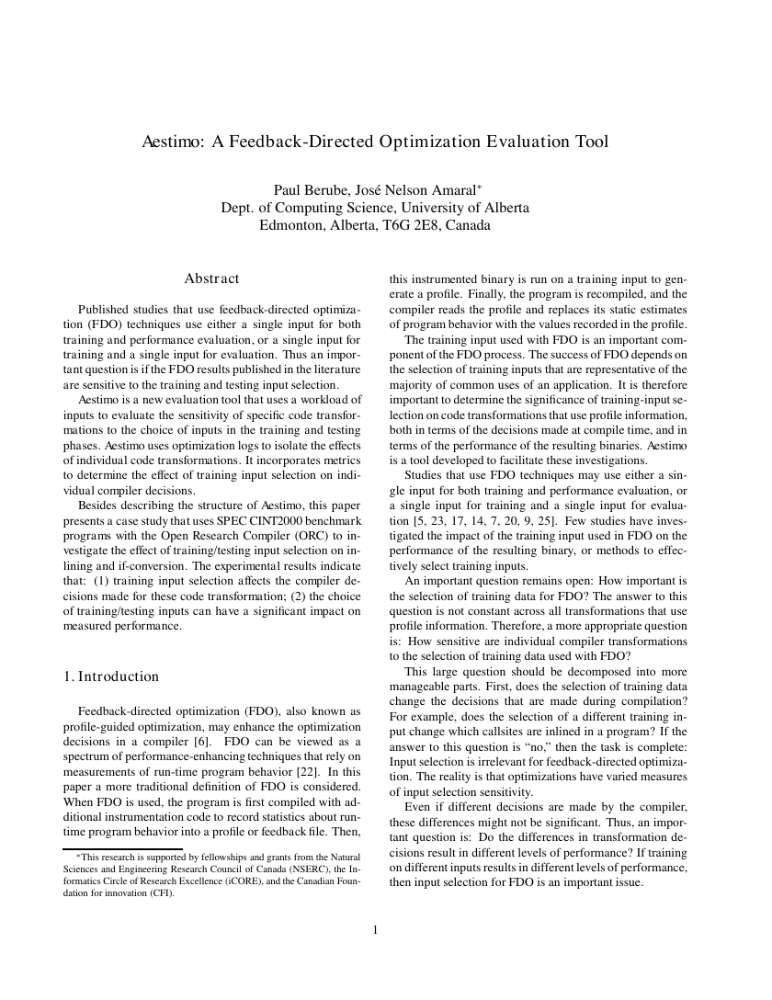
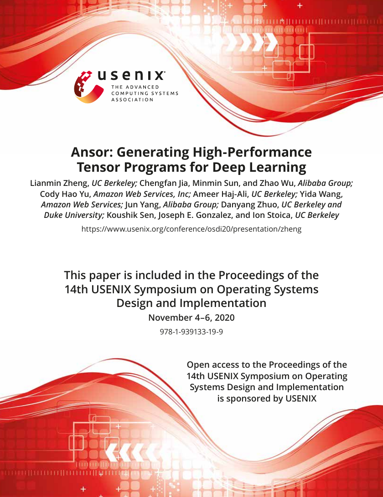

New
Example Site

A Perceptual Model of Motion Quality for Rendering with Adaptive Refresh-Rate and Resolution2020-07SourceCitations: 32
This paper builds a perceptual model for adaptive rendering on variable-refresh displays. It argues that the best resolution-refresh trade-off depends on object velocity and motion predictability, then validates a model-driven renderer against constant-rate alternatives.

Aestimo: A Feedback-Directed Optimization Evaluation ToolunknownSource
Aestimo evaluates how training input selection affects feedback-directed optimization decisions and performance. It isolates individual transformations, compares optimization logs with difference and alignment metrics, and uses ORC/SPEC CINT2000 experiments, especially bzip2, to show why single-input FDO evaluation can mislead.

Alpha Oscillations Suppress Distracting Sensory InputsJul 05, 2011Source
Foxe and Snyder argue that alpha-band oscillations can actively suppress distracting sensory processing during selective attention. The review shows that alpha often marks the neural system being ignored rather than the item being selected.

Ansor Broadens Tensor Program SearchunknownSourceCitations: 522
Ansor automates tensor-program generation for deep learning by combining hierarchical sketches, complete-program search, learned cost modeling, and subgraph scheduling. The evaluation reports strong operator, subgraph, network, and search-time gains, with scope limited to static dense workloads and backend-supported instruction generation.

Compiler Design for Distributed Quantum ComputingJan 22, 2021Source
This IEEE Transactions on Quantum Engineering article studies how to compile quantum circuits for distributed quantum computers connected through quantum-network resources. It identifies remote-operation constraints, derives conservative depth-overhead bounds for two CNOT distribution strategies, implements the compiler in Qiskit, and validates the analysis on benchmark circuits.

Compiler-Aided DNA Strand Displacement CircuitsFeb 23, 2017Source
This Nature Communications article reports a compiler-aided workflow for designing and building a large DNA strand displacement circuit from unpurified oligonucleotides. The demonstrated rule 110-124 circuit contains six layers and 78 initial DNA species, and the authors show how calibration, outlier detection, tuning, and synthesis-error modeling make the construction experimentally workable.

Foveated Rendering: A State-of-the-Art Survey2023-06Source
This survey presents foveated rendering as a response to the real-time burden of complex VR scenes and the perceptual consequences of latency. It explains how human visual-system models let renderers concentrate fidelity near gaze while reducing work in peripheral regions. Its main contribution is a taxonomy organized by data type, foveation principle, and rendering paradigm, applied to 90 reports from 1990 to 2021.

Grounding and Essence as Generalized IdentityunknownSource
Fabrice Correia and Alexander Skiles propose that grounding and essence can be unified through generalized identity. Their account treats essence through full and partial generic identity, and grounding through disjunctive parthood and subsumption. The paper’s main payoff is an explanation of how grounding, essence, and identity constrain one another without reducing essence to mere necessity.

Grounding Is Necessary Through EssenceunknownSource
Kelly Trogdon’s article asks whether grounding is necessary in the sense that full grounds metaphysically entail what they ground. It answers yes, arguing from a constraint on cognitively significant connecting questions and a Fine-style account of essence. The paper also explains why familiar counterexamples are best treated as partial-ground or non-ground cases rather than failures of necessity.

Grounding Is Not a Strict OrderunknownSource
Gonzalo Rodriguez-Pereyra argues that grounding should not be classified as a strict order. The source challenges transitivity, irreflexivity, and asymmetry by treating truthmaking and alethic-fact grounding as species of grounding, then constructing cases in which those relations fail strict-order constraints.

Image-Based Crowd Rendering for Virtual CitiesunknownSource
This source presents an image-based rendering pipeline for animated crowds in virtual cities. It combines optimized impostors, texture packing, compression, alpha-guided recoloring, and grid-based behavior support. The implementation reports 10,000 varied humans in a 41,260-polygon village at interactive frame rates.

Information Integration Theory of ConsciousnessNov 02, 2004Source
Giulio Tononi’s article defines consciousness as integrated information. It introduces Φ as a measure of conscious quantity, treats complexes as experiential subjects, and explains conscious quality through effective-information relationships. The framework interprets thalamocortical organization, modular neural systems, disconnection, sleep, seizures, and possible artificial consciousness.

Interactive Level-of-Detail Rendering for Large GraphsunknownSource
This source presents an OpenGL level-of-detail renderer for large graph drawings. It combines density-based node aggregation with image-space edge cumulation so users can explore large graphs interactively without precomputed hierarchies. The evidence includes algorithm design, complexity analysis, rendering-time tables, and dataset examples.

Machine Learning Makes Compiler Optimization EmpiricalunknownSource
Zheng Wang and Michael O’Boyle frame machine learning as a practical continuation of compiler automation: use empirical data to decide when optimizations help. The survey explains how compilers can learn from program features and measured outcomes, while stressing that learned models remain bounded by the data, transformations, and legality information supplied by compiler engineers.

Memory and the Sense of Personal Identity2012-07Source
Klein and Nichols argue that autobiographical memory does not always carry a felt sense of ownership. Their central evidence is patient R.B., who could recall vivid pre-injury scenes but experienced them as not really his. The case supports a two-component model in which memory content and mineness can separate, with consequences for quasi-memory and philosophical claims about identity over time.

Mindfulness as Self-Awareness, Regulation, and TranscendenceOct 25, 2012Source
Vago and Silbersweig propose S-ART as a framework for mindfulness built around self-awareness, self-regulation, and self-transcendence. The review links meditation practice to biased self-processing, neurocognitive control, body regulation, prosociality, and a research agenda for testing specific mechanisms rather than treating mindfulness as a black box.

Mindfulness Research Needs Less Hype and More Rigor2018Source
This article is a critical review and agenda-setting paper about mindfulness and meditation research. It argues that enthusiasm in media, clinical practice, education, and neuroscience has outrun the precision and strength of the evidence. The authors call for clearer terminology, stronger measures, better clinical designs, active monitoring of harms, and more cautious communication of brain-imaging findings.

Mindfulness Training Modifies Subsystems of Attention2007Source
This study tests whether mindfulness training changes separable attention subsystems measured by the ANT. Novice MBSR participants improved orienting, experienced retreat participants showed stronger no-cue alerting readiness, and prior meditation experience aligned with better baseline conflict monitoring. The authors treat the causal interpretation as preliminary.

Photonic Variational Solver for Molecular EnergiesJul 23, 2014Source
Peruzzo and collaborators present an early experimental variational quantum eigensolver implemented with integrated photonics. The work replaces phase-estimation-style long coherent evolution with repeated short Pauli measurements plus classical feedback, then demonstrates the method on the minimal-basis He-H+ ground-state energy curve.

Profile-Guided Classic Optimizations for C Compilers1991-04Source
This 1991 compiler report shows how execution profiles steer classic C optimizations toward hot paths. It introduces weighted flow graphs, trace selection, tail duplication, and super-block optimization, reporting 1.15 average speedup with 1.07 average code growth.

Psychedelics Shift Beliefs Beyond Hard MaterialismunknownSource
This Scientific Reports article examines whether psychedelics change metaphysical beliefs. It reports shifts away from hard materialism toward non-physicalist views, supported by a ceremony survey and a smaller psilocybin trial. The findings are linked to emotional synchrony and mental-health improvement but remain context-limited.

Quantum Computing in the NISQ Era and BeyondJul 30, 2018Source
Preskill introduces the NISQ era as the arrival of noisy, intermediate-scale quantum devices with roughly 50 to a few hundred qubits. The paper is optimistic about scientific discovery, especially in highly entangled quantum dynamics, but cautious about near-term commercial breakthroughs because gate noise, limited circuit depth, and error-correction overhead remain severe constraints.

Quantum Interconnects for the Quantum InternetunknownSource
Kimble frames the quantum internet as nodes and channels built on reversible light-matter interfaces. It contrasts genuine quantum connectivity with classically linked quantum devices, then reviews cavity-QED and atomic-ensemble routes while emphasizing unresolved needs in memories, repeaters, teleportation, and scalable verification.

Quantum Machine Learning Speedups and BottlenecksunknownSource
This review frames quantum machine learning as the attempt to convert quantum algorithmic speedups into practical learning and data-analysis tools. Its central message is balanced: qBLAS, HHL, qPCA, quantum support vector machines, and quantum Boltzmann machines create plausible advantages, but input, output, costing, and benchmarking problems determine whether those advantages survive in complete systems.

Quantum Supremacy Using a Programmable Superconducting ProcessorOct 23, 2019Source
This Nature article reports Sycamore random-circuit sampling on 53 qubits. Cross-entropy benchmarking, component error calibration, and classical-cost estimates support a task-specific quantum supremacy claim. The result is a benchmark speedup, not general fault-tolerant quantum computing.

ReSTIR Makes Dynamic Direct Lighting Real-Time2020-07SourceCitations: 108
ReSTIR treats real-time many-light direct illumination as a reservoir resampling problem. It stores compact per-pixel reservoirs, reuses selected candidates across neighbors and prior frames, and offers biased and unbiased modes. The result is fast GPU rendering with clear limits around discontinuities, weak correlation, and first-hit image-space scope.

Shadercoding Turns Mathematics Into Live Digital Art2019Source
Fouquart and Chen frame shadercoding as both GPU graphics technique and live digital-art practice. They explain fragment shaders, raymarching, distance fields, and mathematical image generation, then connect those techniques to Shader Showdown performance. The source argues that technical mastery and constraint can enable expressive real-time improvisation.

Skeleton-Guided Edge Bundling for Graph VisualizationunknownSource
This source introduces skeleton-based edge bundling, which uses medial axes of inflated edge clusters as graph-layout guides. It combines sampled-edge clustering, distance-field skeletons, endpoint-preserving attraction, GPU acceleration, and visual postprocessing to reveal coarse connectivity while obscuring individual edge detail.

Temporal Coherence Methods in Real-Time RenderingunknownSourceCitations: 47
Temporal Coherence Methods in Real-Time Rendering surveys how adjacent interactive frames can reuse rendering work through reprojection, cache validation, refresh, and amortized sampling. It treats temporal coherence as a broad design principle for shader acceleration, anti-aliasing, shadows, global illumination, upsampling, frame interpolation, LOD, streaming, visibility culling, and perceptual effects.

WCC Compiler Reduces Worst-Case Execution TimesJul 22, 2010Source
This source presents WCC, a C compiler framework designed to optimize hard real-time software for worst-case execution time rather than average-case speed. Its central idea is to integrate static WCET analysis into compilation, lift timing information across compiler abstraction levels, and use that information to drive source-level and assembly-level optimizations.
Amortized and Aggregated Rendering WorkMay 05, 2026TopicEvidence: 0Claims: 8
Several sources describe rendering strategies that make large or expensive visual computations tractable by spreading, merging, or reusing work. Amortized temporal sampling smooths a reprojected running average to reduce variance over time, while graph level-of-detail rendering merges node work into pixel bins and aggregates edges or endpoints in image space.
Attention Regulation and Sensory SelectionApr 26, 2026TopicEvidence: 0Claims: 14
Mindfulness sources connect practice with attention regulation and altered Attention Network Test subsystems, while alpha-oscillation evidence provides a mechanistic account of selective attention as active suppression of irrelevant sensory processing.
Attentional Gating and Sensory SuppressionApr 26, 2026TopicEvidence: 0Claims: 14
Selective attention can be framed as a family of gating mechanisms that improve behavior by prioritizing relevant inputs and suppressing distracting ones. The alpha-oscillation source emphasizes neural suppression of irrelevant sensory processing, while the mindfulness source distinguishes behavioral attention subsystems that can change with training.
Benchmarking Noisy Quantum ComputationApr 26, 2026TopicEvidence: 0Claims: 7
Preskill's NISQ framing emphasizes that two-qubit gate and measurement errors limit how large uncorrected quantum circuits can grow before noise overwhelms the signal. The Sycamore paper turns that limitation into a measurement problem by estimating fidelity for random circuits whose ideal outputs become difficult to compute directly.
Bias, Artifacts, and Approximation BoundariesMay 05, 2026TopicEvidence: 0Claims: 7
The sources repeatedly show that real-time graphics methods gain speed by accepting controlled approximation, then managing the artifacts that approximation creates.
Cache Validity and View-Change ArtifactsMay 05, 2026TopicEvidence: 0Claims: 7
Temporal reuse is limited by whether cached frame data still corresponds to the same visible surface point. Reverse reprojection tests previous-frame positions and depth or identity agreement, while forward reprojection maps cached pixels into the target frame but must handle motion vectors, scattering, occlusion, and holes.
Calibration and feedback in evidence-driven compilationApr 26, 2026TopicEvidence: 0Claims: 10
Several sources show compilers using measured or analyzed evidence to steer decisions. The DNA circuit workflow calibrates effective concentrations, identifies outlier gates, tunes output behavior, and uses a synthesis-error-aware model. Profile-guided and machine-learning compiler work similarly use runtime profiles, empirical data, and program features to guide optimization decisions.
Cognitive Mediators of Metaphysical CommitmentApr 26, 2026TopicEvidence: 0Claims: 7
The memory and psychedelic-belief sources jointly support a topic on how metaphysical commitments may be shaped by contingent psychological systems rather than by argument alone. In the memory case, ownership feelings affect the evidential force of memory for personal identity; in the psychedelic studies, ceremonies and psilocybin therapy are associated with shifts away from hard materialism.
Coherent interfaces for scaling quantum systemsApr 26, 2026TopicEvidence: 0Claims: 8
This topic synthesizes the hardware-facing requirement shared by quantum computing and quantum networking sources: useful scaling depends not only on more qubits, but on preserving coherence while operations, measurements, and interfaces become larger and more complex. In the NISQ and Sycamore sources this pressure appears as two-qubit gate errors, readout errors, circuit depth, and predicted fidelity. In the quantum-internet source it appears as the need for reversible interconnects that convert quantum states between matter and light while preserving coherence and entanglement.
Compiler Optimization as Evidence-Driven Decision MakingApr 26, 2026TopicEvidence: 0Claims: 10
The sources collectively support a topic about compilers as decision systems that use evidence about programs, executions, hardware, or timing models to select transformations. Machine-learning compilation uses empirical training data and program features to predict optimization choices, profile-guided optimization uses runtime counts to select hot super-block regions, and WCC uses static analyzer output to choose WCET-reducing transformations.
Compiler-aided design for nontraditional computing substratesApr 26, 2026TopicEvidence: 0Claims: 6
The DNA strand displacement and distributed quantum computing sources both treat compilation as a bridge from an abstract computation to a constrained physical substrate. In the DNA case, feedforward digital logic is translated into dual-rail and seesaw DNA circuits with simulation code and DNA sequences. In the distributed quantum case, arbitrary quantum algorithms must be mapped to networked processor architectures while accounting for communication constraints.
Compositional Compiler Infrastructure for Domain-Specific ObjectivesApr 26, 2026TopicEvidence: 0Claims: 10
Across the sources, compiler improvements are presented as integrated infrastructures rather than isolated transformations. Profile-guided optimization adds profiling, super-block formation, and profile-aware versions of classic optimizations; machine-learning compilation adds training and deployment stages around the compiler; WCC connects a C compiler to aiT and composes multiple WCET-aware optimizations; distributed quantum compilation maps algorithms to constrained distributed architectures through strategy-specific compilation of remote operations.
Context-dependent optimization tradeoffsMay 05, 2026TopicEvidence: 0Claims: 8
This topic would synthesize cases where an optimization is beneficial only under particular inputs, paths, hardware resources, or program contexts.
Context-Dependent Optimization TradeoffsApr 26, 2026TopicEvidence: 0Claims: 6
Both sources emphasize that optimization choices are context dependent rather than universally beneficial. Profile-based classic optimizations target hot paths and complement conventional optimization, while machine-learning examples such as thread coarsening depend on program and hardware context.
Contingent Selfhood and Essential ExplanationApr 26, 2026TopicEvidence: 0Claims: 8
R.B.'s case supports a page on how apparently necessary links between episodic recollection and numerical personal identity can turn out to be contingent. The memory evidence says autobiographical event content, factual self-knowledge, trait self-knowledge, voluntary recall, and some future planning can persist while the felt mineness normally taken to certify identity is absent.
Cortical Network Organization and Conscious AccessApr 26, 2026TopicEvidence: 0Claims: 8
Across the sources, cortical organization matters both for conscious experience and for selective attention, but the claims operate at different explanatory levels. Information integration theory addresses the conditions for conscious experience, while alpha-band attention research addresses suppressive modulation of sensory processing.
Data access, readout, and error overheads shape whether quantum algorithms scaleApr 26, 2026TopicEvidence: 0Claims: 7
The QML source states that loading large classical datasets can require exponential time without qRAM and that reading full solution vectors or principal components can be exponentially hard. These caveats constrain linear-algebra speedups such as HHL and qPCA, especially when the desired answer is classical data rather than a quantum state or compact statistic.
Differentiated and Integrated Mental FunctionsApr 26, 2026TopicEvidence: 0Claims: 13
This topic should be framed as a cautious bridge between two levels of analysis. Tononi treats consciousness as a system-level capacity for differentiated-yet-unified information integration, while Jha, Krompinger, and Baime treat attention as separable alerting, orienting, and conflict-monitoring subsystems rather than one global attention capacity.
Domain-Specific Compiler Automation PipelinesMay 05, 2026TopicEvidence: 0Claims: 6
Ansor automatically generates high-performance tensor programs for DNN subgraphs from high-level computation definitions, but its automation is bounded by static known shapes, dense operators, and backend-supported instruction optimization.
Empirical Evidence as a Compiler Optimization SignalApr 26, 2026TopicEvidence: 0Claims: 8
Both sources treat compiler optimization as an evidence-guided decision problem. The profile-guided source uses execution counts and weighted flow graphs to focus classic C optimizations on frequently executed regions, while the machine-learning source uses empirical training data and learned models to choose optimization heuristics for unseen programs.